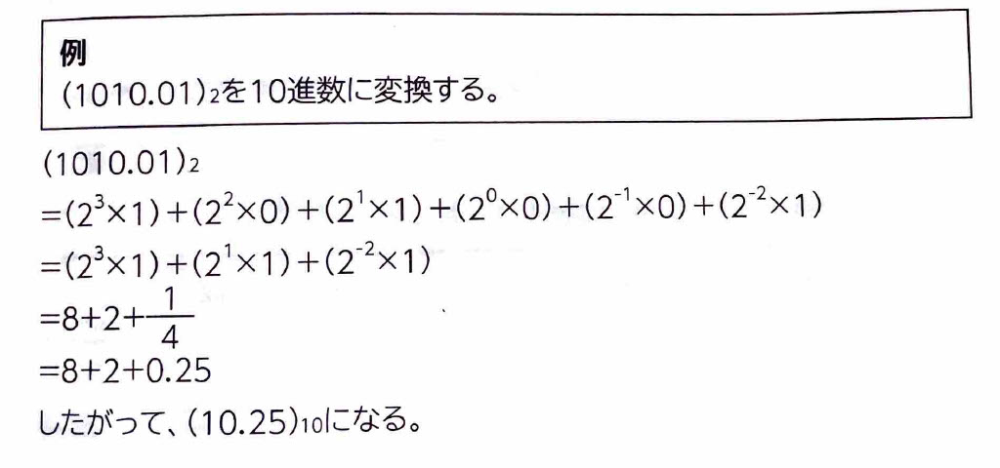
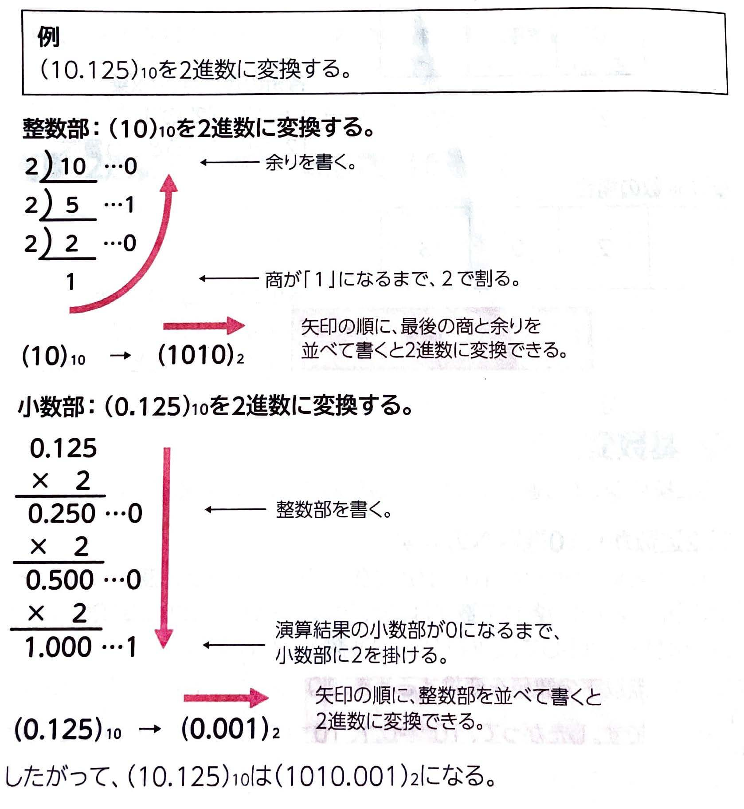
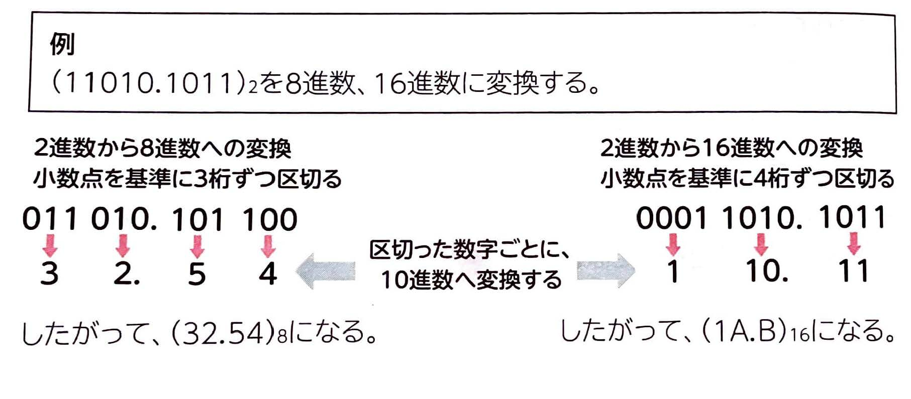
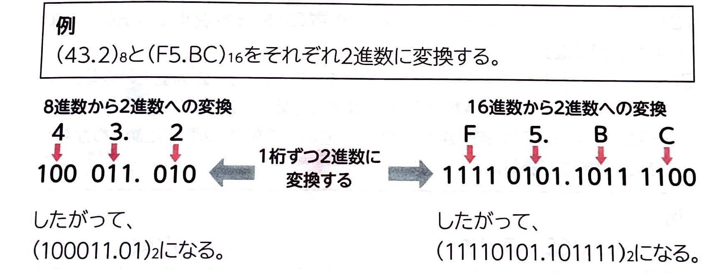

【 基数変換 】
表示
｢基数変換｣
とは、ある進数から別の進数に置き換えることです。
(1)2進数から10進数への変換
10進数の各位の数字が、\(10^0\)、\(10^1\)、\(10^2\)…の何倍なのかを表しているように、2進数の各位の数字は、\(2^0\)、\(2^1\)、\(2^2\)…の何倍なのかを表しています。この性質を利用して、2進数から10進数へ変換します。
また、小数点以下の数値を変換するとき、\(10^{-1}\)は\( \frac{1}{10^1}\)、\(10^{-2}\)は\( \frac{1}{10^2}\)、\(10^{-3}\)は\( \frac{1}{10^3}\)のことです。したがって、\(10^{-1}=0.1\)、\(10^{-2}=0.01\)、\(10^{-3}=0.001\)と言い換えることができます。\(2^{-1}\)は\( \frac{1}{2^1}\)、\(2^{-2}\)は\( \frac{1}{2^2}\)、\(2^{-3}\)は\( \frac{1}{2^3}\)のことです。したがって、\(2^{-1}=0.5\)、\(2^{-2}=0.25\)、\(2^{-3}=0.125\)と10進数に置き換えることが出来ます。

(2)10進数から2進数への変換
12.75は8+4+0.5+0.25であることから、\(2^3+2^2+2^{-1}+2^{-2}\)、よって1100.11になりますが、数値が大きくなると簡単には計算できません。そこで、整数部と小数部に分けて考えます。整数部では、10進数を2で割って商と余りを求め、商が1になるまで繰り返します。求めた余りを反対の順番で記述すると、2進数に変換できます。小数部では、10進数に2を掛けて、小数部が0になるまで繰り返します。求めた結果の整数部を順番で記述すると、2進数に変換できます。

(3)2進数から8進数や16進数への変換
2進数から8進数や16進数への変換は、次の性質を利用します。
・2進数3桁分を8進数では1桁で表現する。
・2進数4桁分では1桁で表現する。

(4)8進数や16進数から2進数への変換
8進数や16進数から2進数への変換は、次の性質を利用します。
・8進数1桁分を2進数では3桁で表現する。
・16進数1桁分を2進数では4桁で表現する。
